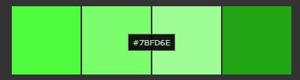
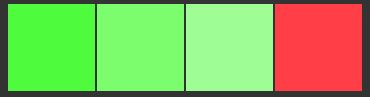
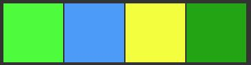

Monochromatic color schemes are derived from a single base hue and extended using its shades, tones and tints. Tints are achieved by adding white and shades and tones are achieved by adding a darker color, grey or black.

Complementary colors are pairs of colors which, when combined or mixed, cancel each other out (lose hue) by producing a grayscale color like white or black.[1] When placed next to each other, they create the strongest contrast for those two colors. Complementary colors may also be called "opposite colors."

Analogous colors are groups of three colors that are next to each other on the color wheel, sharing a common color, with one being the dominant color, which tends to be a primary or secondary color, and a tertiary. Red, orange, and red-orange are examples. Using color theory can really improve the look of your website!Color theory page created for semantic tags practice.